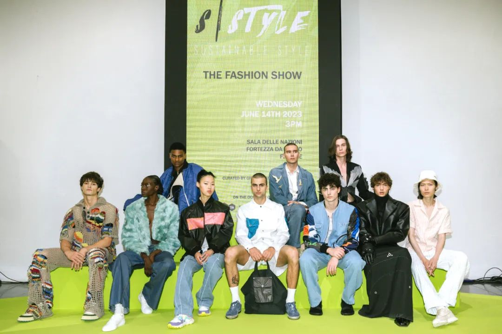
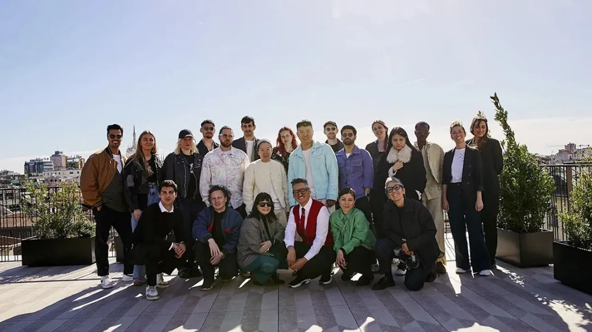
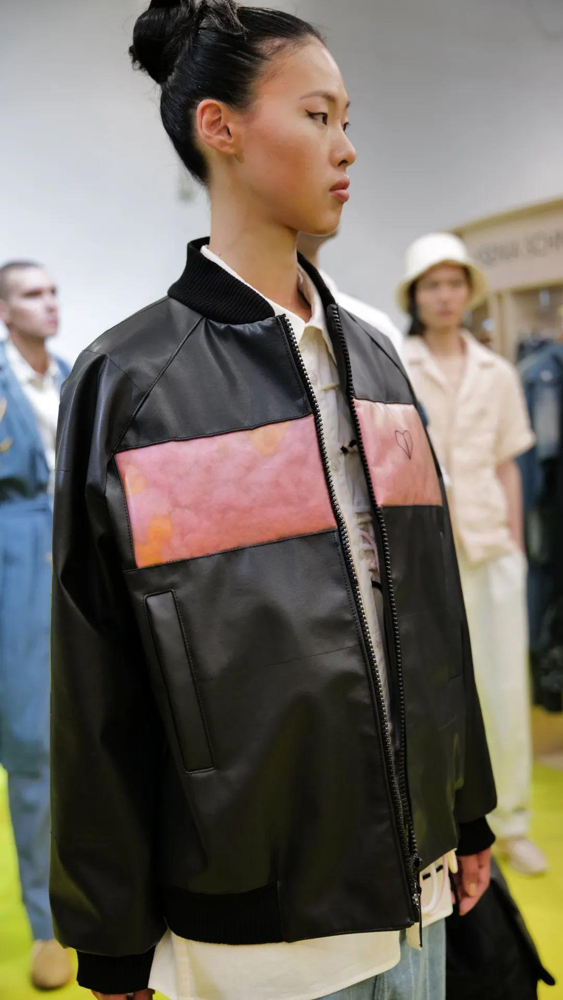
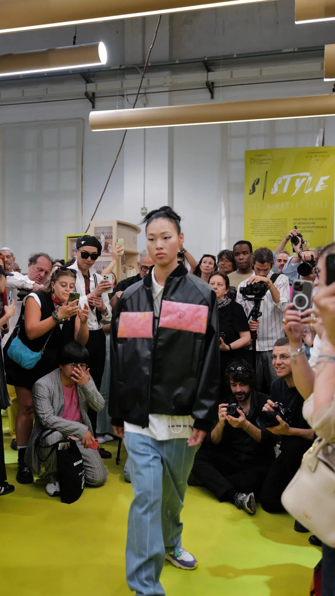
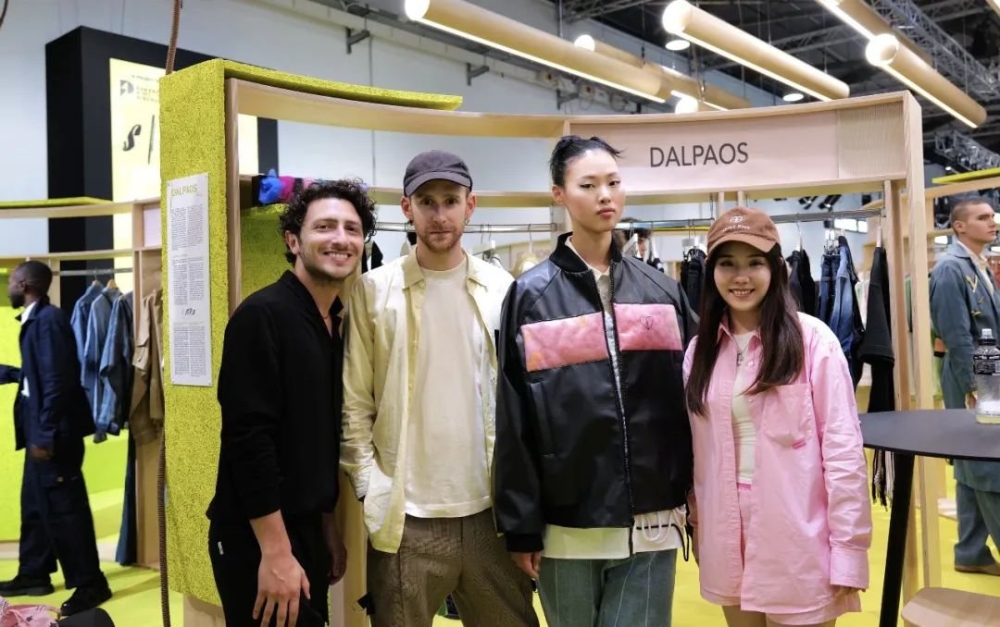
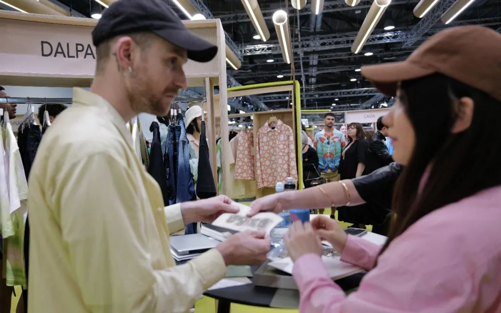

PEELSPHERE supports designer brands and collaborates with Kering to showcase at Pitti Uomo
From June 13th to 16th, PEELSPHERE received an invitation from Kering Group to attend Pitti Uomo 104, the men's fashion show in Florence, Italy. They made an appearance at the S|Style Sustainable Project, collaborating with the Italian designer brand Dalpaos. Together with the Kering Material Innovation Lab, they are working to support inclusive design and sustainable innovation for emerging men's fashion brands.

In this emerging brand exhibition supported by the Kering material innovation lab, MIL and the Pitti Imagine Discovery Foundation, PEELSPHERE, as a practitioner of sustainability, actively collaborates and supports diverse, interesting, and creative fashion design brands.
Pitti Uomo traces its origins back to 1972 and is one of the world's most important platforms for showcasing new menswear projects. It takes place annually at the Fortezza de Basso in Florence. S|Style is Pitti Uomo's proprietary brand platform that, based on a shared sustainable innovation concept, has entered into an exclusive partnership with the Kering Group for the first time. Together with globally renowned designers, they aim to promote sustainable practices continuously. From certifications to recycling, reusing, and innovative blended fabrics, they strive to discover clothing and accessories with the least environmental impact.
With the support of the Kering group and MIL (Material Innovation Lab), the exhibition organized by the Pitti Discovery Foundation brought surprises to the summer days of June. It gathered top global buyers and media representatives for a showcase of influential projects. Giorgia Cantarini, the exhibition's reporter and curator, scouted 10 international, diverse, and innovative brands from around the world to bring sustainable creativity to the runway for display.
In the S|Style project, each designer comes with a constant flow of inspiration, exploring various solutions to embed more sustainability standards into their innovative collections. They focus on giving back to the Earth and the community, using recycled materials and promoting fair work mechanisms for craftsmen. In terms of practical implementation, they employ both widely adopted upgraded recycling practices and emphasize reducing resource consumption in the manufacturing process. While meeting international certifications aligned with the existing standards of the Kering Group, they also conceive how bio-based fabrics can serve as solutions. Lapo Cianchi, the Secretary General of the Pitti Discovery Foundation, stated that the participating designers bring their original styles and propose truly novel approaches to the issues that concern the new generation. Kering MIL provides practical assistance to the designers, particularly in the research and design of the most innovative materials.
 In 2021, PEELSPHERE forged a connection with the Kering Group through the Kering K-Generation Award and continued to collaborate on sustainable projects. The K-Generation Award, which seeks out innovative enterprises of the new generation, has helped propel various individuals at the forefront of fashion design and expand nature-based solutions. As a bio-based material, PEELSPHERE also supports designer brands by fostering collaborative partnerships that enhance enduring design rooted in the spirit of craftsmanship.
This time, we collaborated with the designer brand Dalpaos to make a joint appearance at Pitti Uomo. Nicola Dalpaos, a designer from Belluno, brings a vibrant energy that explores the infinite possibilities of the future. He approaches fashion design almost like playing a game, integrating art and life into his design aesthetics. At the same time, he approaches the use of materials in a meticulous and artistic manner, embracing the principles of circular fashion. Every lightweight and minimalist material becomes an accumulation of inspiration for him, aligning with his minimalist design philosophy. This is why Dalpaos finds new inspiration and unveils new designs through the use of PEELSPHERE's new materials. In line with the theme of sustainable innovation experimentation, the exhibition venue is adorned with a vibrant green color, representing fashion, youthfulness, and a green atmosphere.

PEELSPHERE's AlgaeSkin, a translucent material, and bio-based leather have been crafted into soft, fluffy, and stylish garments and bags. In collaboration with Dalpaos, they have reshaped minimalist sustainable combinations and reimagined "men's fashion"
and "gender-neutral dressing."
In the future, PEELSPHERE will continue to carry its collaborative vision, driving the inspiration and design innovation of sustainable materials in fashion design.
16/June/2023